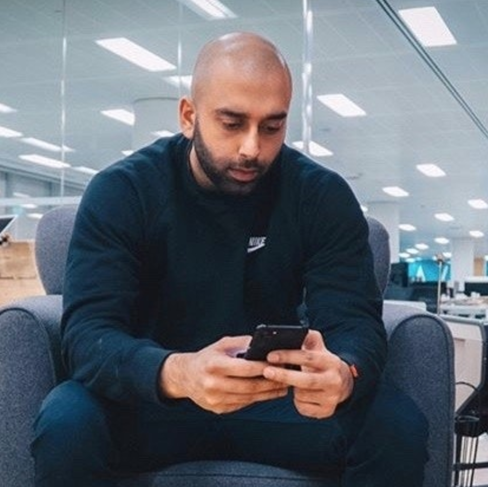
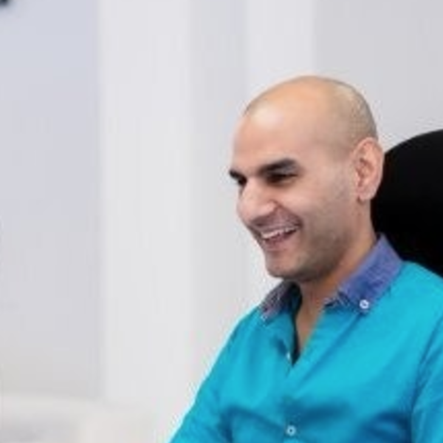

Peter Grillet
Driving business growth with digital solutions
My interests lie at the intersection of web-based solutions and, business objectives. My motivation is to create and grow platforms that solve daily challenges for business professionals.
I’ve built an automated ebook business, while helping others to build fitness apps, award-winning YouTube shows, Music Streaming Services, fashion blogs, a mobile first, money transfer platform and more...
I've also helped multiple B2B businesses make 100s of thousands of pounds and, scale in their early growth stages. Both, as a consultant and in the trenches.
How do I help businesses grow?
I have more than 10 years experience working with early stage companies. My expertise across Marketing, Operations and Web Development give me a unique perspective on challenges facing companies looking to grow. I am able to spot bottle-necks then deliver solutions based on experience and, my skillset
I particularly enjoy projects where users' needs are combined with business objectives. This often means developing empathy for the user by understanding their workflows and pain points. Then, leveraging the insights/ data to build digital solutions that drive consistency and, quality of work.
Below, you will find a selection of the projects I have had an impact on...
- HTML5
- CSS3
- Bootstrap
- Rails
- Ruby
- PostgreSQL
- Wordpress
- JavaScript
- React.js
- Heroku
- GitHub
- AWS
- Git
Armoury Digital
Creating digital marketing funnels and, websites optimised for conversions for small businesses
- Founder & Digital Marketing Consultant
Fashion Blogging Guide
Building an automated business for selling training material to aspiring fashion bloggers
- Wordpress
- WooCommerce
- LMS
Redhill Card Services
Designing & building the front-end of a mobile first, international money transfer platform
- PHP
- HTML
- CSS

ihorizon
Managing all Operations & Marketing efforts. More than doubling the client base & while the team grew from 5 to 25+
- Intern > Head of Mareting & Operations
nav-poi.com
Helping people find brands and points of interest using their sat-navs. My first company aged 19
- PHP
- HTML
- CSS
Project Manager
A simple app for teams to list projects and associated documents with a paywall
- PHP
- HTML
- CSS
Comments from clients
Peter's knowledge of Digital Marketing and Online Businesses are vast and unique. If your looking to grow your business he is the only person you need to speak to.
Peter has helped me learn and adapt my strategy on a continuous basis.
Shan Hanif, Aflete CEO
Peter is a well-rounded professional with a real passion for startups. He understands the scene well and, can think around what works and what won't. He has great attention to detail and dealt well with any task he took on.
He was a real pleasure to work with.
Pratik Sampat, ihorizon CEO
Current side project
I have always been passionate about challenging myself to create solutions to real-world problems. While I have focused on marketing for the last few years, more recently I've dived back into coding.
After speaking to startups struggling to hire and, junior devs coming out of bootcamps, it seemed like there was a real struggle to connect the two. So, I decided to create a job board with a twist...
- HTML5
- CSS3
- Bootstrap
- Rails
- postgreSQL
- JavaScript
- Heroku
- GitHub
Get in touch
If you've project I might be interested in or, want to talk startups at the next meet-up I'm attending, feel free to connect...